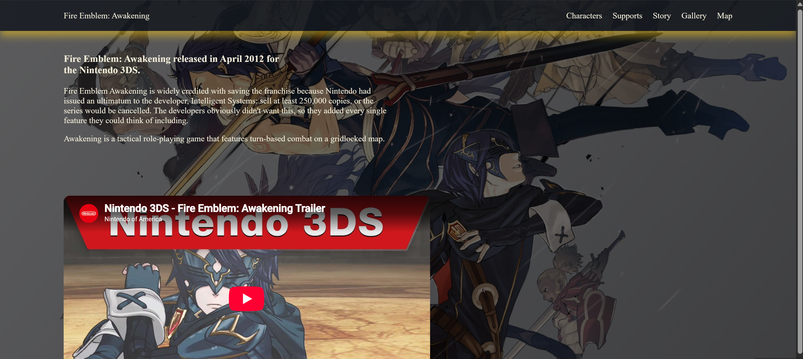
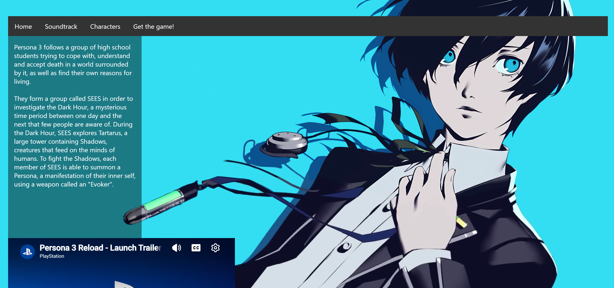
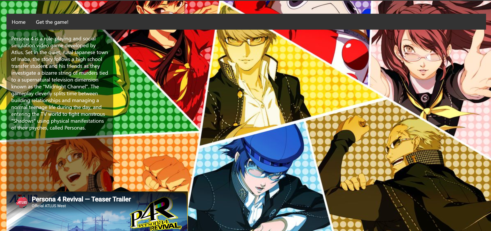
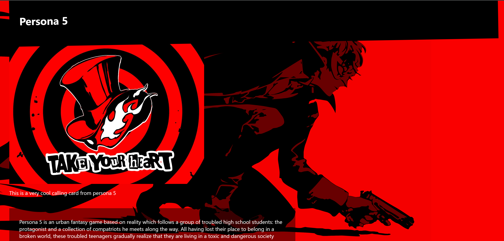

Building this site helped me turn a specific topic into a clear web experience for both longtime fans and newcomers. I practiced organizing information, creating a visual hierarchy that helps visitors find their way, and building custom layouts and navigation with HTML and CSS. Those skills carry over to business websites, where presenting services clearly and helping potential customers find the right information can make a real difference.



This was where I began learning how to shape a website around the needs of its audience. I brought together information about several games and their characters, practicing how to structure detailed content, keep related pages visually consistent, and make the site easier to browse with clear navigation. The project gave me a foundation in custom HTML and CSS, responsive design, and interactive features—skills I can use to build a client’s online presence so visitors can understand what they offer and take the next step.